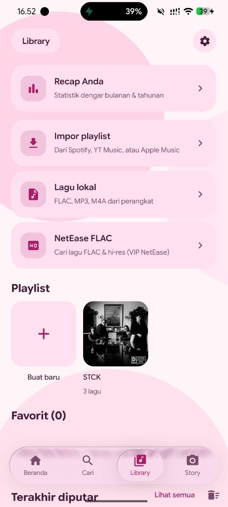
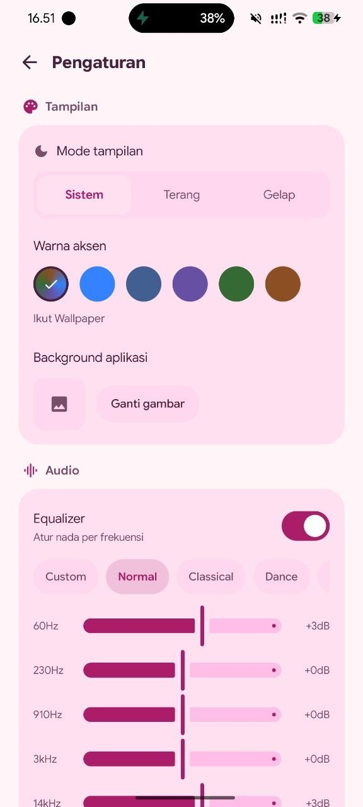
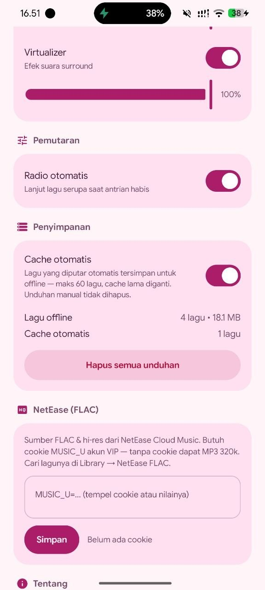
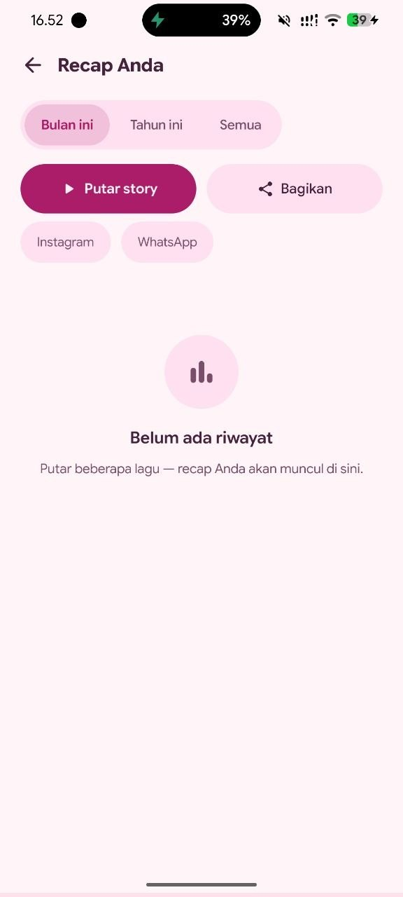

Seluruh katalog musik.
Tanpa akun, tanpa iklan.
Serenade memutar katalog YouTube Music dan NetEase Cloud Music langsung di ponsel — navbar liquid glass, lirik yang mengikuti lagu, unduhan offline, dan recap yang bisa dibagikan.


Sembilan layar, satu tumpukan.
Geser kartu seperti daftar aplikasi terakhir di ponsel. Klik atau ketuk kartu terdepan untuk melihat ukuran penuh.





Geser kartu, gulir, atau pakai tombol panah. Klik kartu terdepan untuk memperbesar.
Dibangun untuk dipakai tiap hari, bukan dipamerkan.
Antarmuka miuix dengan blur dan refraksi asli, pustaka lokal, dan aliran musik yang berhenti kalau Anda berhenti mendengarkan.
Liquid glass yang benar-benar kaca
Navbar dan mini player mengambil sampel lapisan di belakangnya — blur, refraksi lens, slider jelly yang bisa digeser.
Lirik yang mengikuti lagu
Lirik sinkron dari lrclib.net; baris aktif membesar dengan glow lembut dan bisa diketuk untuk melompat.
Pustaka milik Anda, di ponsel
Favorit, riwayat, dan playlist disimpan lokal sebagai JSON. Tanpa akun, tanpa sinkronisasi ke server orang lain.
Antrean yang bisa Anda atur
Tahan ikon geser di tab Antrian untuk menaruh lagu mana pun di urutan berikutnya, atau pilih “Putar berikutnya” dari menu lagu. Saat antrean habis, radio lagu terakhir melanjutkan sendiri.
Sumber kedua untuk FLAC
NetEase Cloud Music: MP3 320 kbps langsung jalan, kualitas lossless aktif bila Anda menempelkan cookie akun VIP.
Unduh sekali, dengar kapan saja
Tiga unduhan paralel di layanan latar depan — lanjut walau aplikasi ditutup, bisa dilanjutkan dari posisi terakhir.
Pindah tanpa kehilangan
Impor playlist dari Spotify, YouTube Music, atau Apple Music; tiap lagu dicocokkan lalu disimpan sebagai playlist lokal.
Recap dan story
Statistik bulanan atau tahunan dari menit yang benar-benar Anda dengar, siap diekspor 1080×1920.
Widget lima ukuran
Satu mesin state untuk Small, Medium, Wide, Compact, dan Now Playing — sinkron real-time dengan pemutaran.
Equalizer dan virtualizer
Lima band plus preset, bass boost, dan efek surround, tersimpan bersama pengaturan tampilan Anda.
Empat langkah, tanpa server rahasia.
Semuanya dibaca langsung dari layanan publik di perangkat Anda.
Katalog · InnerTube
Pencarian, beranda, playlist, dan radio dari klien WEB_REMIX — tanpa API key.
Stream · NewPipeExtractor
URL audio itag 140/251 di-resolve dari base.js asli lewat Rhino, bukan cipher yang diblokir.
Sumber kedua · NetEase FLAC
Jalur tambahan untuk lossless: MP3 320k tanpa akun, FLAC bila memakai cookie VIP.
Putar · Media3
ExoPlayer + MediaSessionService: notifikasi media, lockscreen, Bluetooth, audio focus, unduhan latar belakang.
Lima ukuran, satu engine.
Monochrome gelap dengan artwork sebagai aksen. Progress berjalan tiap detik saat memutar, dan hanya aktif bila widget terpasang.
Statistik yang enak dilihat, lalu dibagikan.
- 1Top artis, top lagu, total menit untuk bulan ini, tahun ini, atau sepanjang waktu.
- 2Recap story — tiap slide lagu teratas benar-benar memutar lagunya, mulai dari bagian tengah.
- 3Gambar 1080×1920 bergaya Wrapped, siap untuk Instagram Story atau status WhatsApp.
- 4Menit yang nyata — dihitung dari durasi pemutaran sungguhan, bukan perkiraan jumlah lagu.
- 5Beranda personal — rak “Sering Anda putar”, “Karena suka {artis}”, dan Daily Mix harian.
Pindah tanpa kehilangan.
Playlist lama tidak perlu dibangun ulang. Tempel tautannya, tiap lagu dicocokkan ke katalog, lalu tersimpan sebagai playlist lokal yang bisa diputar atau diunduh.
- 1Library → Impor playlist. Pilih sumbernya: Spotify, YouTube Music, Apple Music, atau mode teks.
- 2Tempel tautan. Playlist sumber harus publik; mode teks menerima daftar “Judul - Artis”.
- 3Biarkan dicocokkan. Progres tiap lagu terlihat, lalu playlist langsung siap diputar atau diunduh.
Pasang Serenade di ponsel Anda.
Pilih varian sesuai Android Anda — isi fiturnya sama, hanya efek kaca yang membedakan. Unduh, izinkan pemasangan dari sumber ini, selesai.
Blur, refraksi lens, dan animasi blur antar tab aktif penuh.
serenade-modern.apkPermukaan solid agar tetap ringan di perangkat lama.
serenade-legacy.apkDitandatangani kunci tetap — versi berikutnya bisa dipasang langsung menimpa yang lama, tanpa uninstall dan tanpa kehilangan pustaka.
Yang sering ditanyakan.
Dari mana musiknya?
music.youtube.com/youtubei/v1, klien WEB_REMIX); URL stream audio di-resolve dengan NewPipeExtractor. Ada jalur kedua, NetEase Cloud Music, untuk lagu berkualitas tinggi. Tidak ada server rahasia — semuanya dibaca dari layanan publik.